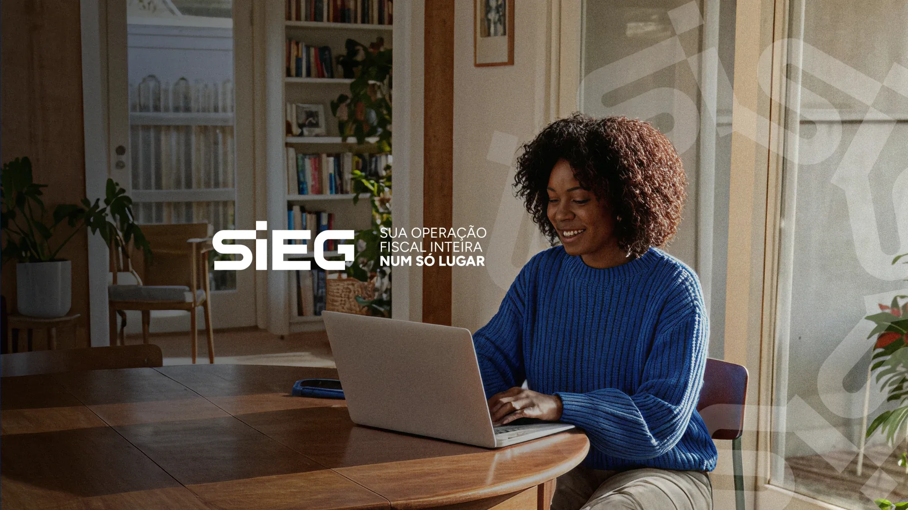

Legenda do post 01.


Um ano criando a comunicação visual da SIEG, do feed às ferramentas internas.
Tecnologia para simplificar a rotina fiscal de contadores e empresas.
Desde setembro de 2025 sou estagiário de design na equipe de conteúdo do marketing, transformando um assunto técnico em peças claras para dentro e fora da empresa.
Feed do Instagram
Só as peças que eu criei. Role para girar o celular.Arraste os carrosséis para os lados.
Carrossel 01
Legenda do post 01.


Legenda do post 02.


Legenda do post 03.

Legenda do post 04.


Legenda do post 05.


Legenda do post 06.
Num tema técnico como o fiscal, é o design que faz a informação parar o scroll.